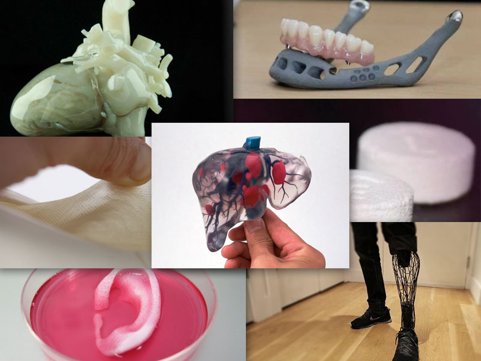

Beneficios Clave
La impresión 3D ofrece numerosos beneficios clave tanto en la industria médica como en la industrial. En medicina, permite la creación de modelos anatómicos precisos, implantes personalizados y prótesis a medida, mejorando la planificación quirúrgica y los resultados de los pacientes. En la industria, facilita la producción de piezas personalizadas, reduce tiempos de producción y costos, y permite la creación de prototipos rápidos, impulsando la innovación y optimizando la cadena de suministro, algunos beneficios clave son:
- Planificación quirúrgica mejorada
- Atención personalizada
- Educación médica
- Reducción de tiempos y costos
- Aceleración de la investigación
- Optimización de la cadena de suministro
- Fabricación de piezas complejas
- Mayor flexibilidad en el diseño
- Sostenibilidad
